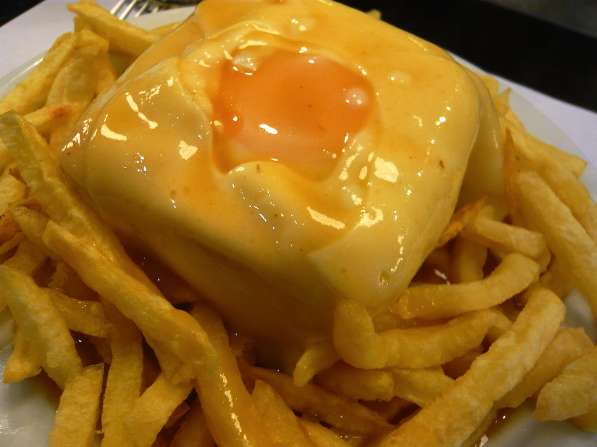

Francesinha

What is it?
Francesinha is a traditional sandwich from Porto, Portugal, consisting
of layers of toasted bread and a variety of hot meats, including roast
beef, steak, cured ham, linguiça, or chipolata. The sandwich is topped
with melted cheese and covered with a hot, tomato-based beer sauce known
as molho de francesinha. It is commonly served with french fries on the
side.
Ingredients
Francesinha ingredients
- 2 slices of bread
- 1 linguiça sausage
- 1 regular sausage
- 2 slices of ham
- 2 slices of bologna
- 1 steak
- 5-6 slices of Flamengo cheese
- 1 egg (optional)
- French fries (optional)
Sauce ingredients
- 1 medium yellow onion
- 1 tbsp olive oil
- 13.5 tbsp white wine
- 4 tbsp ketchup
- 4 tbsp tomato paste
- 2 tbsp oxtail soup mix
- 6.5 tbsp whiskey
- 3.5 tbsp tawny Port wine
- 2x 250 ml pilsner beer
- 1 tbsp Worcestershire sauce
- 1/2 tbsp piri-piri sauce
- 1 chicken bouillon cube
- 6.5 tbsp milk
- 1 tsp flour
Francesinha Recipe - Step by step
-
Lightly toast the bread in an oven or toaster, taking care not to press
it too much so it retains its thickness.
-
Cook the steak to medium/rare, then let it rest for a few minutes off
the heat to keep the juices in. Slice it slightly to make it easier to
cut later.
-
Split the linguiça and sausage lengthwise, trimming them to match the
size of the bread if needed. Cook them in the same pan used for the
steak.
-
Fry the egg(s) in the same pan (optional). Fry the potatoes separately
(optional).
-
Assembly: Place one slice of toasted bread in a deep oven-safe dish.
Layer the ham and bologna slices on the bread, then add the sausage,
linguiça, and steak. Place the second slice of bread on top and cover
everything with the cheese slices.
-
Turn on the broiler and place the dish in the oven until the cheese is
melted.
-
Remove from the oven, place the egg on top if using, pour at least two
ladles of sauce over the Francesinha, and serve immediately.
-
Serve the remaining sauce separately in a gravy boat along with the
fries.
Sauce recipe - Step by step
-
Finely chop the onion and sauté in the olive oil until it becomes soft
and translucent.
-
Add the white wine, ketchup, and tomato paste. Bring to a boil and keep
it there while preparing the next steps.
-
Dissolve the oxtail soup mix in 520 ml of boiling water and add it to
the pot.
-
Pour in the whiskey and Port wine, and let the mixture boil for about 35
minutes until the alcohol evaporates, with the lid partially on.
- Use an immersion blender to make the sauce smooth.
-
Add the beer, Worcestershire sauce, piri-piri sauce, and bouillon cube.
-
Dissolve the flour in the milk, add it to the pot, and let it boil for
15 minutes with the lid on.
-
Lower the heat to the minimum and keep it warm until serving. Avoid
opening the pot too often to retain the flavor.